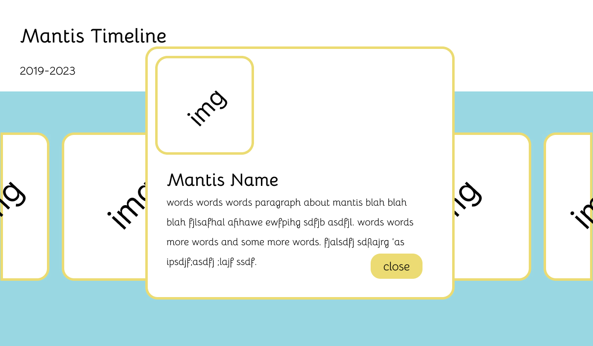
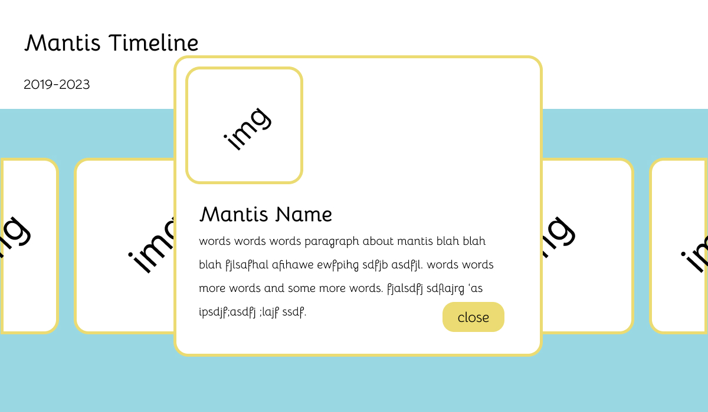

Goals
I am trying to improve my visual design by making it possible for the images to be larger and to add in an overlay so that users do not get information overload. I also realized that some users were not aware that the image would go from black and white to color when hovered on since they were not their own element so a lot of them did not even see the image in color. If changed my project so that users have to hover on the image then they will see the color change and it will be more effective. I also think these changes will help to fill the page as the original project was left aligned as the size of the container looked awkward centered but it also could not become larger because of constraints on the height of it.
 
